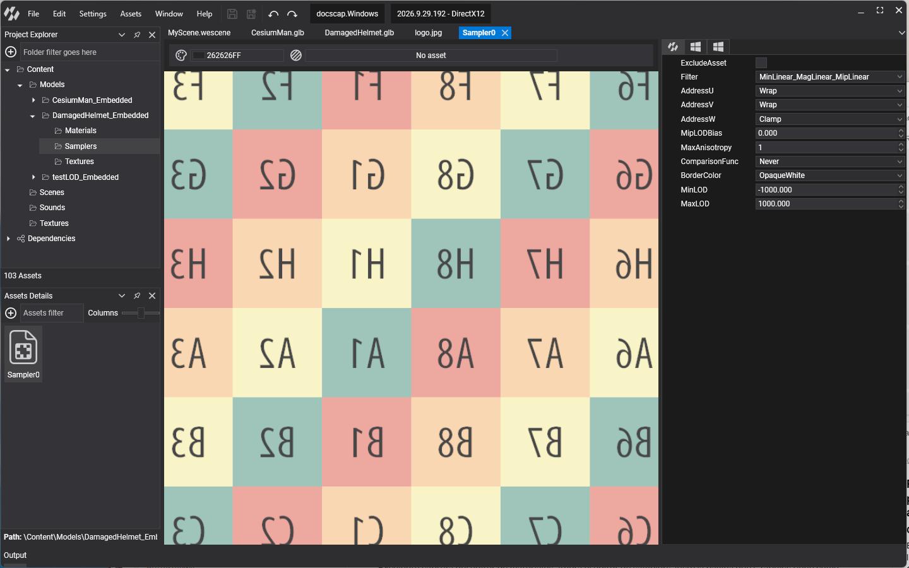

Samplers
A sampler tells the GPU how to read a texture: how to filter between texels and mip levels, and what to do with texture coordinates outside the 0 to 1 range. The same texture can look sharp or smooth, tiled or stretched, depending on the sampler it is read with.
In Evergine a sampler is an asset (.wesp) that wraps a SamplerStateDescription. Materials reference samplers next to their textures, and textures can have a default sampler of their own.

Built-in samplers
The Evergine.Core package includes two sampler assets, which the default materials use:
| Asset | Id in DefaultResourcesIDs |
Filter | Address mode |
|---|---|---|---|
| LinearWrapSampler | LinearWrapSamplerID |
Trilinear | Wrap on U, V and W |
| LinearClampSampler | LinearClampSamplerID |
Trilinear | Clamp on U, V and W |
Use the wrap sampler for textures that tile, such as floors and fabrics, and the clamp sampler for textures that must not bleed at the edges, such as decals, UI and render targets.
Create a sampler in Evergine Studio
Click the  button in the Assets Details panel and choose Create sampler. Double-click the new asset to open the Sampler Editor, which previews the sampler on a tiled checker texture. Its toolbar lets you change the background, preview with one of your own textures instead of the checker, and capture a frame with RenderDoc. Like other assets, a sampler can have different settings per profile.
button in the Assets Details panel and choose Create sampler. Double-click the new asset to open the Sampler Editor, which previews the sampler on a tiled checker texture. Its toolbar lets you change the background, preview with one of your own textures instead of the checker, and capture a frame with RenderDoc. Like other assets, a sampler can have different settings per profile.
Properties
| Property | Default | Description |
|---|---|---|
| Filter | MinLinear_MagLinear_MipLinear |
How texels are combined. Point picks the nearest texel (pixel art, data textures), Linear blends the nearest ones. The three parts choose it separately for minification, magnification and between mip levels. Anisotropic keeps textures sharp on surfaces seen at a grazing angle. |
| AddressU, AddressV, AddressW | Clamp |
What happens outside the 0 to 1 range on each axis: Wrap repeats, Mirror repeats flipping every other copy, Clamp stretches the edge texels, Border uses BorderColor, Mirror_One mirrors once and then clamps. |
| MaxAnisotropy | 1 | Number of samples used by Anisotropic filtering, from 1 to 16. Higher is sharper and more expensive. |
| MipLODBias | 0 | Offset added to the mip level the GPU picks. Negative values sharpen, positive values blur. |
| MinLOD | -1000 | Lowest mip level that can be used. |
| MaxLOD | 1000 | Highest mip level that can be used. |
| ComparisonFunc | Never |
Comparison for comparison samplers (SamplerComparisonState in HLSL), used to read shadow maps. |
| BorderColor | OpaqueWhite |
Color returned with the Border address mode: TransparentBlack, OpaqueBlack or OpaqueWhite. |
The defaults above are those of SamplerStateDescription.Default. A new sampler asset starts from them, so remember to switch the address modes to Wrap for tiling textures.
Use samplers from code
Load a sampler asset like any other asset and assign it to a material:
using Evergine.Common.Graphics;
using Evergine.Framework;
using Evergine.Framework.Graphics;
using Evergine.Framework.Graphics.Materials;
using Evergine.Framework.Services;
public class MyScene : Scene
{
protected override void CreateScene()
{
var assetsService = Application.Current.Container.Resolve<AssetsService>();
var material = new StandardMaterial(assetsService.Load<Material>(DefaultResourcesIDs.DefaultMaterialID).Clone())
{
// Tile the texture four times; only a wrapping sampler repeats it.
TextureTiling = new Evergine.Mathematics.Vector2(4, 4),
BaseColorSampler = assetsService.Load<SamplerState>(DefaultResourcesIDs.LinearWrapSamplerID),
};
}
}
To create a sampler at runtime, fill a SamplerStateDescription, or start from one of the presets in SamplerStates (PointClamp, PointWrap, PointMirror, LinearClamp, LinearWrap, LinearMirror, AnisotropicClamp, AnisotropicWrap and AnisotropicMirror), and create it with the graphics context factory:
var graphicsContext = Application.Current.Container.Resolve<GraphicsContext>();
SamplerStateDescription description = SamplerStates.AnisotropicWrap;
description.MaxAnisotropy = 8;
SamplerState sampler = graphicsContext.Factory.CreateSamplerState(ref description);
Sampler in the low-level API section covers the SamplerState object in detail.